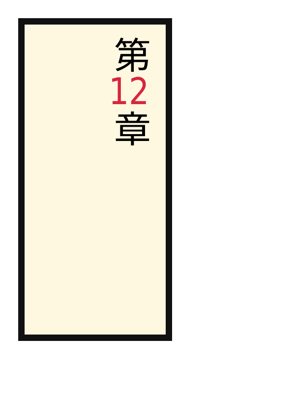
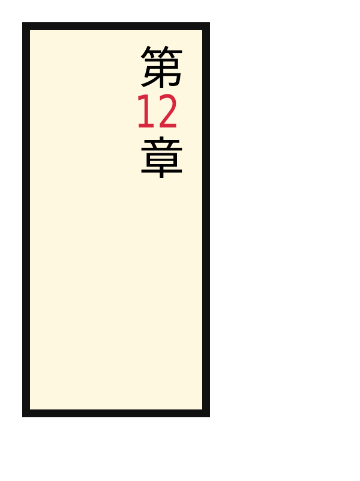
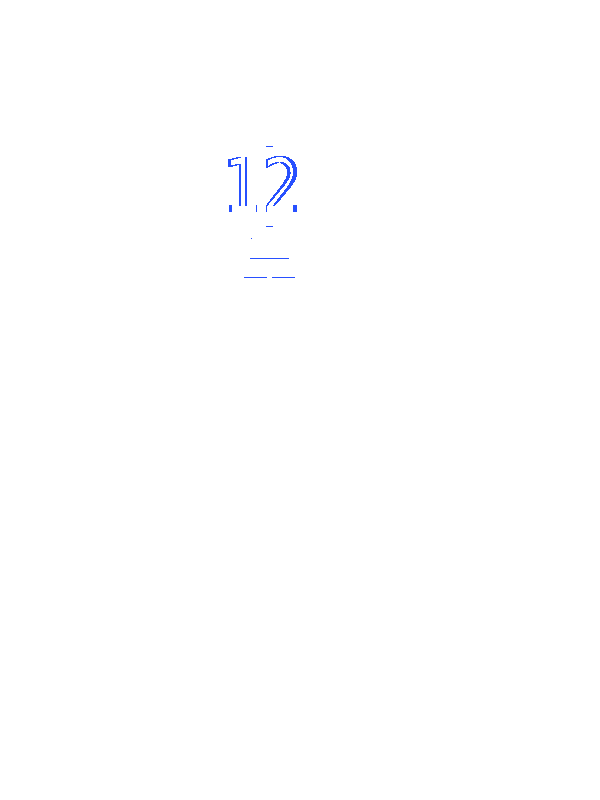

REFERENCE-DISPUTED 801 px · above-floor 0.16% · raw 0.17% max-page diff text-advanced-text-combine-upright-digits · text-combine-upright-digits · REFERENCE DISPUTEDColorValueΔE 26.6



why: fill recolour ΔRGB(+1,+6,+5) (ΔE 26.6)
A vertical date combines two-digit numbers horizontally inside a single vertical character slot. Chromium does not implement the Level-4 digits value, so the oracle uses text-combine-upright:all, which is semantically equivalent for this isolated two-ASCII-digit run. Catches: A vertical-writing implementation can pass plain vertical text while rendering each digit as a separate stacked glyph.
reference dispute: CSS Writing Modes 4 sections 9.1.2 and 9.1.3 require the composition's combined advance to fit within a measured 1em square and explicitly permit geometric compression. Ironpress follows that rule: each 24px two-digit composition occupies 18pt in the PDF. Chromium's LayoutTextCombine::DesiredWidth deliberately allows an undecorated composition 1.1em, with a source comment acknowledging that the margin is not specified; the locked PDF correspondingly uses a 19.8pt advance and outlines 10% wider than the standards-compliant candidate. Its surrounding CJK placement remains useful evidence, but its combined-glyph width is a compatibility canary rather than a normative appearance oracle.
regions (12 total; showing 12 representatives)
Complete dominant-class aggregates
| class | regions | pixels | union bbox (CSS px) | largest px | maximum magnitude |
|---|---|---|---|---|---|
| ColorErr | 12 | 801 | 61,35 → 83,77 | 412 | total 0.4% · largest 0.2% |
Representative region details (worst-first)
| class | bbox (CSS px) | area% | magnitude | reason |
|---|---|---|---|---|
| ColorValue | 73,38 → 83,56 | 0.2 | ΔRGB(2,8,6) | fill recolour ΔRGB(+2,+8,+6) (ΔE 0) |
| AntialiasCoverage | 61,38 → 65,54 | 0.07 | ΔRGB(21,109,85) | antialiasing coverage residue on a shared outline |
| AntialiasCoverage | 67,38 → 67,54 | 0.05 | ΔRGB(-6,-35,-27) | antialiasing coverage residue on a shared outline |
| AntialiasCoverage | 68,71 → 80,71 | 0.02 | ΔRGB(-76,-74,-67) | antialiasing coverage residue on a shared outline |
| ColorValue | 82,54 → 83,56 | 0.01 | ΔRGB(31,159,124) | fill recolour ΔRGB(+31,+159,+124) (ΔE 0) |
| AntialiasCoverage | 66,77 → 73,77 | 0.01 | ΔRGB(-58,-56,-51) | antialiasing coverage residue on a shared outline |
| AntialiasCoverage | 75,77 → 82,77 | 0.01 | ΔRGB(-58,-56,-51) | antialiasing coverage residue on a shared outline |
| AntialiasCoverage | 61,54 → 62,56 | 0.01 | ΔRGB(39,205,160) | antialiasing coverage residue on a shared outline |
| AntialiasCoverage | 73,35 → 75,35 | 0.003404 | ΔRGB(32,32,29) | antialiasing coverage residue on a shared outline |
| AntialiasCoverage | 70,54 → 70,56 | 0.003404 | ΔRGB(8,42,33) | antialiasing coverage residue on a shared outline |
| AntialiasCoverage | 73,60 → 75,60 | 0.003404 | ΔRGB(32,32,29) | antialiasing coverage residue on a shared outline |
| AntialiasCoverage | 68,64 → 68,64 | 0.000486 | ΔRGB(-16,-16,-14) | antialiasing coverage residue on a shared outline |
source · cases/text-advanced/text-advanced-text-combine-upright-digits.html
1<!DOCTYPE html><html><head><meta charset='utf-8'><style>@page{size:192px 256px;margin:0}html{font-family:ParitySans;line-height:1.5}*{margin:0;box-sizing:border-box}body{padding:12px;background:#fff}.v{writing-mode:vertical-rl;text-orientation:upright;width:100px;height:210px;border:4px solid #111;background:#fff8e1;font-size:24px;line-height:32px;padding:8px}.d{text-combine-upright:digits 2;color:#d7263d}</style></head><body><div class='v'>第<span class='d'>12</span>章</div></body></html>